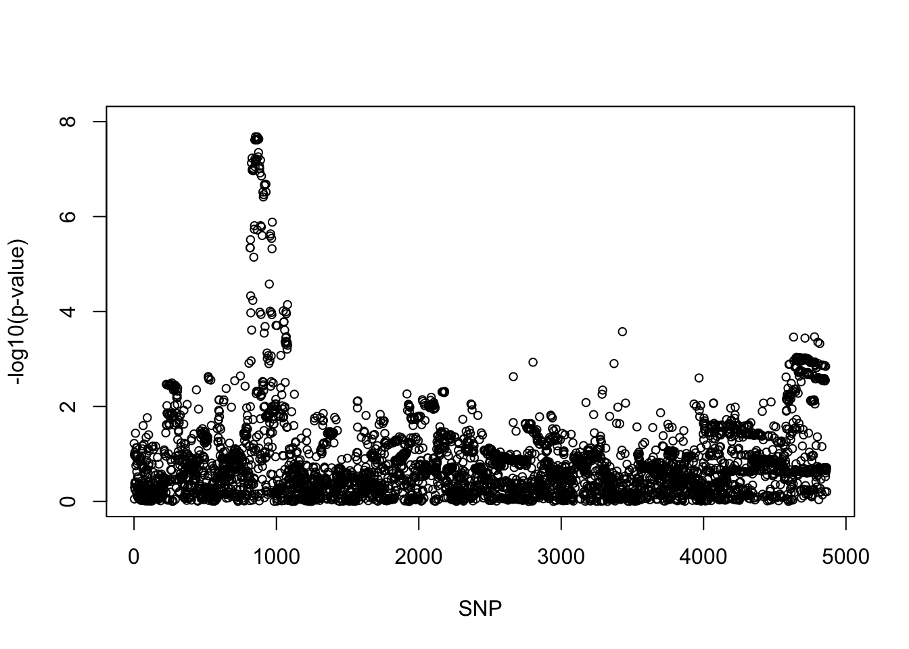
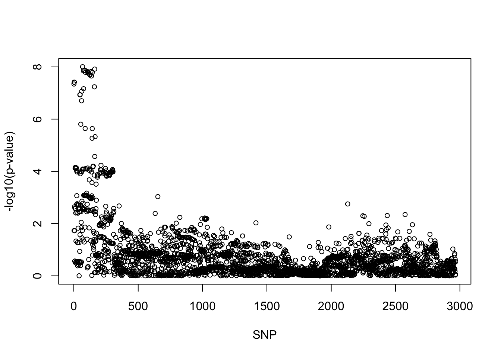
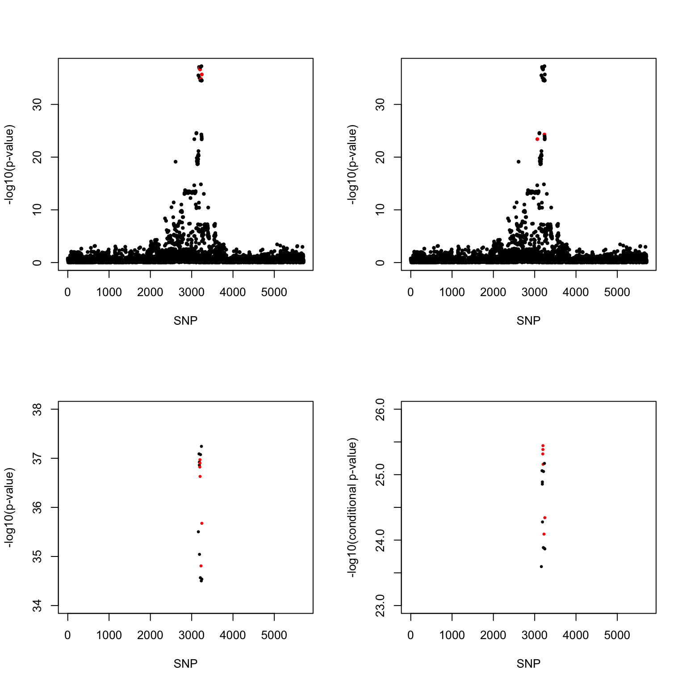

self-report-asthma
Yunqi Yang
4/16/2024
Last updated: 2024-04-18
Checks: 7 0
Knit directory: survival-data-analysis/
This reproducible R Markdown analysis was created with workflowr (version 1.6.2). The Checks tab describes the reproducibility checks that were applied when the results were created. The Past versions tab lists the development history.
Great! Since the R Markdown file has been committed to the Git repository, you know the exact version of the code that produced these results.
Great job! The global environment was empty. Objects defined in the global environment can affect the analysis in your R Markdown file in unknown ways. For reproduciblity it’s best to always run the code in an empty environment.
The command set.seed(20240324) was run prior to running the code in the R Markdown file. Setting a seed ensures that any results that rely on randomness, e.g. subsampling or permutations, are reproducible.
Great job! Recording the operating system, R version, and package versions is critical for reproducibility.
Nice! There were no cached chunks for this analysis, so you can be confident that you successfully produced the results during this run.
Great job! Using relative paths to the files within your workflowr project makes it easier to run your code on other machines.
Great! You are using Git for version control. Tracking code development and connecting the code version to the results is critical for reproducibility.
The results in this page were generated with repository version 8dea711. See the Past versions tab to see a history of the changes made to the R Markdown and HTML files.
Note that you need to be careful to ensure that all relevant files for the analysis have been committed to Git prior to generating the results (you can use wflow_publish or wflow_git_commit). workflowr only checks the R Markdown file, but you know if there are other scripts or data files that it depends on. Below is the status of the Git repository when the results were generated:
Ignored files:
Ignored: .Rproj.user/
Note that any generated files, e.g. HTML, png, CSS, etc., are not included in this status report because it is ok for generated content to have uncommitted changes.
These are the previous versions of the repository in which changes were made to the R Markdown (analysis/asthma_self_report.Rmd) and HTML (docs/asthma_self_report.html) files. If you’ve configured a remote Git repository (see ?wflow_git_remote), click on the hyperlinks in the table below to view the files as they were in that past version.
| File | Version | Author | Date | Message |
|---|---|---|---|---|
| Rmd | 8dea711 | yunqiyang0215 | 2024-04-18 | wflow_publish("analysis/asthma_self_report.Rmd") |
| html | c6dd36b | yunqiyang0215 | 2024-04-16 | Build site. |
| Rmd | df62df5 | yunqiyang0215 | 2024-04-16 | wflow_publish("analysis/asthma_self_report.Rmd") |
library(survival)
library(susieR)
devtools::load_all("/Users/nicholeyang/Downloads/logisticsusie")ℹ Loading logisticsusieRegion 1
res = readRDS("/Users/nicholeyang/Downloads/survivalsusie/result/asthma_self_report/res_susie/fit.susie.chr11_61000000_63000000.rds")
gwas = readRDS("/Users/nicholeyang/Downloads/survivalsusie/result/asthma_self_report/res202404/gwas_chr11_61000000_63000000.rds")fit = res[[1]]
X = res[[2]]
pip <- logisticsusie:::get_pip(fit$alpha)
effect_estimate <- colSums(fit$alpha * fit$mu)
pip.sorted = sort(pip, decreasing = TRUE)
pip.sorted[1:10] [1] 0.048345837 0.018942668 0.017804861 0.017581518 0.016594471 0.009652823
[7] 0.008519408 0.008456946 0.008387958 0.008320214class(fit) = "susie"
cs <- susie_get_cs(fit, X)
cs$cs
NULL
$coverage
NULL
$requested_coverage
[1] 0.95plot(-log10(gwas[, "p.value.spa"]), xlab = "SNP", ylab = "-log10(p-value)",
ylim = c(0, 8), cex = 0.8)
| Version | Author | Date |
|---|---|---|
| c6dd36b | yunqiyang0215 | 2024-04-16 |
Region 2
res = readRDS("/Users/nicholeyang/Downloads/survivalsusie/result/asthma_self_report/res_susie/fit.susie.chr11_1113000_1750000.rds")
gwas = readRDS("/Users/nicholeyang/Downloads/survivalsusie/result/asthma_self_report/res202404/gwas_chr11_1113000_1750000.rds")fit = res[[1]]
X = res[[2]]
pip <- logisticsusie:::get_pip(fit$alpha)
effect_estimate <- colSums(fit$alpha * fit$mu)
pip.sorted = sort(pip, decreasing = TRUE)
pip.sorted[1:10] [1] 0.020313888 0.020143342 0.019259236 0.016483365 0.012727759 0.011996254
[7] 0.009421512 0.009018887 0.009014567 0.008883730class(fit) = "susie"
cs <- susie_get_cs(fit, X)
cs$cs
NULL
$coverage
NULL
$requested_coverage
[1] 0.95plot(-log10(gwas[, "p.value.spa"]), xlab = "SNP", ylab = "-log10(p-value)",
ylim = c(0, 8), cex = 0.8)
| Version | Author | Date |
|---|---|---|
| c6dd36b | yunqiyang0215 | 2024-04-16 |
Region 3
res = readRDS("/Users/nicholeyang/Downloads/survivalsusie/result/asthma_self_report/res_susie/fit.susie.chr11_75000000_77000000.rds")
gwas = readRDS("/Users/nicholeyang/Downloads/survivalsusie/result/asthma_self_report/res202404/gwas_chr11_75000000_77000000.rds")fit = res[[1]]
X = res[[2]]
pip <- logisticsusie:::get_pip(fit$alpha)
effect_estimate <- colSums(fit$alpha * fit$mu)
pip.sorted = sort(pip, decreasing = TRUE)
pip.sorted[1:10] [1] 0.83918080 0.26044924 0.24549898 0.21465913 0.18439119 0.15293021
[7] 0.03706393 0.01280900 0.01168736 0.01047847class(fit) = "susie"
cs <- susie_get_cs(fit, X)
cs$cs
$cs$L1
[1] 3196 3199 3200 3203 3225 3245
$cs$L2
[1] 3064 3235
$purity
min.abs.corr mean.abs.corr median.abs.corr
L1 0.9423496 0.9786286 0.9854458
L2 0.9414139 0.9414139 0.9414139
$cs_index
[1] 1 2
$coverage
[1] 0.9500171 0.9908003
$requested_coverage
[1] 0.95par(mfrow = c(1,3))
snps1 = colnames(X)[cs$cs$L1]
colors <- ifelse(rownames(gwas) %in% snps1, "red", "black")
plot(-log10(gwas[, "p.value.spa"]), col = colors, xlab = "SNP", ylab = "-log10(p-value)", cex = 0.8, pch = 20)
plot(-log10(gwas[, "p.value.spa"]), col = colors, xlab = "SNP", ylab = "-log10(p-value)", cex = 0.8, pch = 20, ylim = c(34, 40))
snps2 = colnames(X)[cs$cs$L2]
colors <- ifelse(rownames(gwas) %in% snps2, "red", "black")
plot(-log10(gwas[, "p.value.spa"]), col = colors, xlab = "SNP", ylab = "-log10(p-value)", cex = 0.8, pch = 20)
| Version | Author | Date |
|---|---|---|
| c6dd36b | yunqiyang0215 | 2024-04-16 |
cbind(gwas[rownames(gwas) %in% snps1, ], pip[sort(cs$cs$L1)]) MAF missing.rate p.value.spa p.value.norm Stat
rs7936070_T 0.4766971 0 1.503789e-37 1.452115e-37 1612.065
rs7936312_T 0.4766166 0 1.251399e-37 1.208159e-37 1613.890
rs7936323_A 0.4765950 0 1.070192e-37 1.033056e-37 1615.204
rs7936434_C 0.4768852 0 2.342714e-37 2.263324e-37 1607.740
rs10160518_G 0.4973644 0 1.555762e-35 1.515029e-35 -1567.527
rs7931483_A 0.4765866 0 2.109275e-36 2.041818e-36 1579.912
Var z
rs7936070_T 15838.20 12.80942 0.21465913
rs7936312_T 15838.79 12.82369 0.24549898
rs7936323_A 15834.63 12.83582 0.26044924
rs7936434_C 15838.51 12.77494 0.18439119
rs10160518_G 15868.56 -12.44361 0.01280900
rs7931483_A 15716.01 12.60264 0.03706393cbind(gwas[rownames(gwas) %in% snps2, ], pip[sort(cs$cs$L2)]) MAF missing.rate p.value.spa p.value.norm Stat
rs61894547_T 0.05155540 0 3.916273e-24 8.543620e-25 570.9379
rs55646091_A 0.05086819 0 5.110427e-25 9.672793e-26 572.9645
Var z
rs61894547_T 3083.681 10.28145 0.8391808
rs55646091_A 2983.742 10.48931 0.1529302SNP rs61894547 is on the intron of gene EMSY, a known gene associated with risk of asthma.
Region 4
res = readRDS("/Users/nicholeyang/Downloads/survivalsusie/result/asthma_self_report/res_susie/fit.susie.chr17_37500000_39000000.rds")
gwas = readRDS("/Users/nicholeyang/Downloads/survivalsusie/result/asthma_self_report/res202404/gwas_chr17_37500000_39000000.rds")fit = res[[1]]
X = res[[2]]
pip <- logisticsusie:::get_pip(fit$alpha)
effect_estimate <- colSums(fit$alpha * fit$mu)
pip.sorted = sort(pip, decreasing = TRUE)
pip.sorted[1:10] [1] 0.15054878 0.14440487 0.12546579 0.10494243 0.09420209 0.09279236
[7] 0.08840848 0.08325030 0.08116618 0.02647503class(fit) = "susie"
cs <- susie_get_cs(fit, X)
cs$cs
$cs$L1
[1] 1215 1218 1219 1226 1227 1232 1239 1241 1249
$purity
min.abs.corr mean.abs.corr median.abs.corr
L1 0.9946412 0.9984299 0.9992943
$cs_index
[1] 1
$coverage
[1] 0.9515849
$requested_coverage
[1] 0.95#par(mfrow = c(1,))
snps1 = colnames(X)[cs$cs$L1]
colors <- ifelse(rownames(gwas) %in% snps1, "red", "black")
plot(-log10(gwas[, "p.value.spa"]), col = colors, xlab = "SNP", ylab = "-log10(p-value)", cex = 0.8, pch = 20)
| Version | Author | Date |
|---|---|---|
| c6dd36b | yunqiyang0215 | 2024-04-16 |
cbind(gwas[rownames(gwas) %in% snps1, ], pip[sort(cs$cs$L1)]) MAF missing.rate p.value.spa p.value.norm Stat
rs11651596_C 0.4711579 0 9.947331e-36 9.618739e-36 -1570.315
rs12949100_A 0.4709323 0 7.665040e-36 7.409160e-36 -1572.964
rs8069176_A 0.4712393 0 1.199672e-35 1.160289e-35 -1568.498
rs4795399_C 0.4712166 0 8.096519e-36 7.827701e-36 -1573.030
rs2305480_A 0.4712096 0 9.136234e-36 8.833860e-36 -1571.808
rs11078926_A 0.4711895 0 9.466887e-36 9.153782e-36 -1571.440
rs11078927_T 0.4710100 0 1.059990e-35 1.024952e-35 -1570.176
rs12939832_A 0.4710054 0 8.304129e-36 8.027765e-36 -1572.232
rs4795400_T 0.4712255 0 7.079374e-36 6.843430e-36 -1573.472
Var z
rs11651596_C 15832.73 -12.47983 0.15054878
rs12949100_A 15833.46 -12.50060 0.14440487
rs8069176_A 15834.00 -12.46489 0.09279236
rs4795399_C 15845.87 -12.49623 0.12546579
rs2305480_A 15845.64 -12.48661 0.10494243
rs11078926_A 15845.40 -12.48378 0.09420209
rs11078927_T 15842.77 -12.47478 0.08325030
rs12939832_A 15834.88 -12.49422 0.08840848
rs4795400_T 15827.70 -12.50691 0.08116618
sessionInfo()R version 4.1.1 (2021-08-10)
Platform: x86_64-apple-darwin20.6.0 (64-bit)
Running under: macOS Monterey 12.0.1
Matrix products: default
BLAS: /usr/local/Cellar/openblas/0.3.18/lib/libopenblasp-r0.3.18.dylib
LAPACK: /usr/local/Cellar/r/4.1.1_1/lib/R/lib/libRlapack.dylib
locale:
[1] en_US.UTF-8/en_US.UTF-8/en_US.UTF-8/C/en_US.UTF-8/en_US.UTF-8
attached base packages:
[1] stats graphics grDevices utils datasets methods base
other attached packages:
[1] logisticsusie_0.0.0.9004 testthat_3.1.0 susieR_0.12.35
[4] survival_3.2-11 workflowr_1.6.2
loaded via a namespace (and not attached):
[1] Rcpp_1.0.8.3 lattice_0.20-44 prettyunits_1.1.1 ps_1.6.0
[5] rprojroot_2.0.2 digest_0.6.28 utf8_1.2.2 R6_2.5.1
[9] plyr_1.8.6 RcppZiggurat_0.1.6 evaluate_0.14 highr_0.9
[13] ggplot2_3.4.3 pillar_1.9.0 rlang_1.1.1 rstudioapi_0.13
[17] irlba_2.3.5 whisker_0.4 callr_3.7.3 jquerylib_0.1.4
[21] Matrix_1.5-3 rmarkdown_2.11 desc_1.4.0 devtools_2.4.2
[25] splines_4.1.1 stringr_1.4.0 munsell_0.5.0 mixsqp_0.3-43
[29] compiler_4.1.1 httpuv_1.6.3 xfun_0.27 pkgconfig_2.0.3
[33] pkgbuild_1.2.0 htmltools_0.5.5 tidyselect_1.2.0 tibble_3.1.5
[37] matrixStats_0.63.0 reshape_0.8.9 fansi_0.5.0 crayon_1.4.1
[41] dplyr_1.0.7 withr_2.5.0 later_1.3.0 grid_4.1.1
[45] jsonlite_1.7.2 gtable_0.3.0 lifecycle_1.0.3 git2r_0.28.0
[49] magrittr_2.0.1 scales_1.2.1 Rfast_2.0.6 cli_3.6.1
[53] stringi_1.7.5 cachem_1.0.6 fs_1.5.0 promises_1.2.0.1
[57] remotes_2.4.2 bslib_0.4.1 ellipsis_0.3.2 generics_0.1.2
[61] vctrs_0.6.3 tools_4.1.1 glue_1.4.2 purrr_0.3.4
[65] parallel_4.1.1 processx_3.8.1 pkgload_1.2.3 fastmap_1.1.0
[69] yaml_2.2.1 colorspace_2.0-2 sessioninfo_1.1.1 memoise_2.0.1
[73] knitr_1.36 usethis_2.1.3 sass_0.4.4